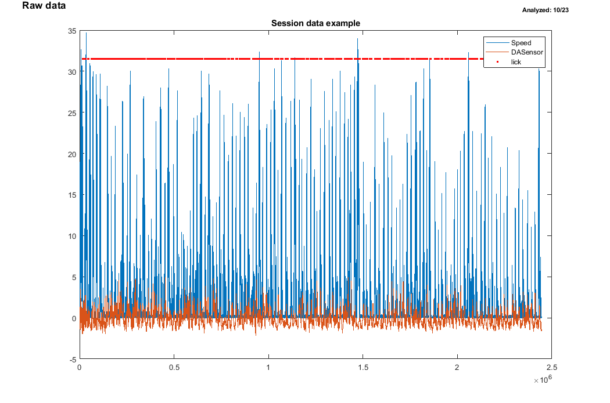
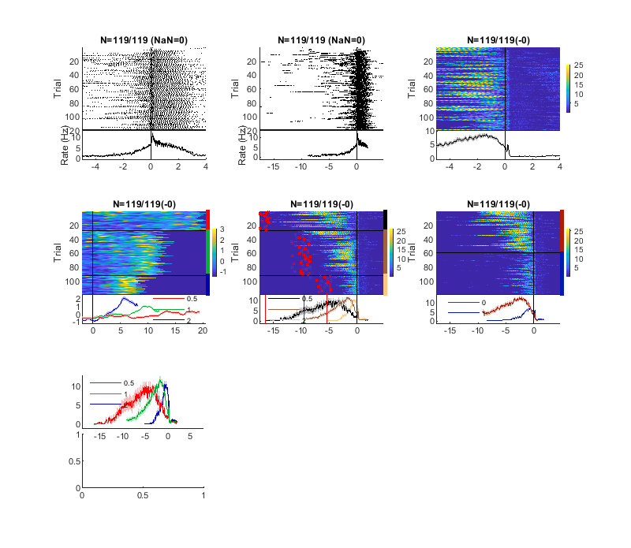
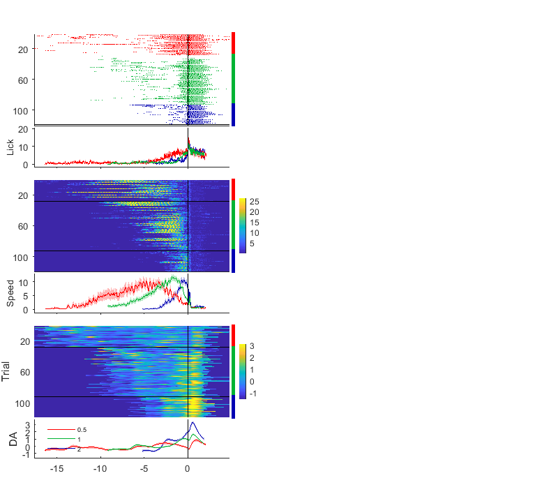
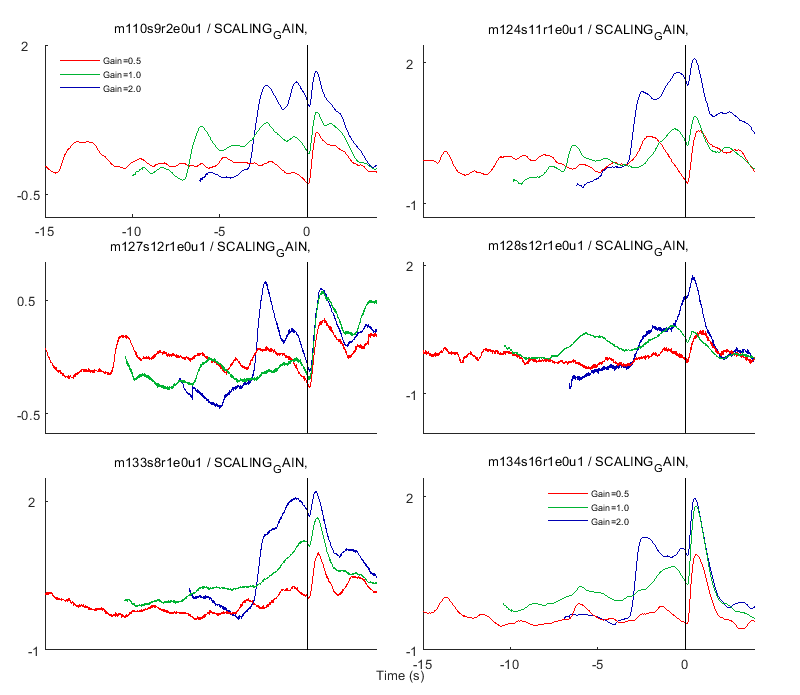
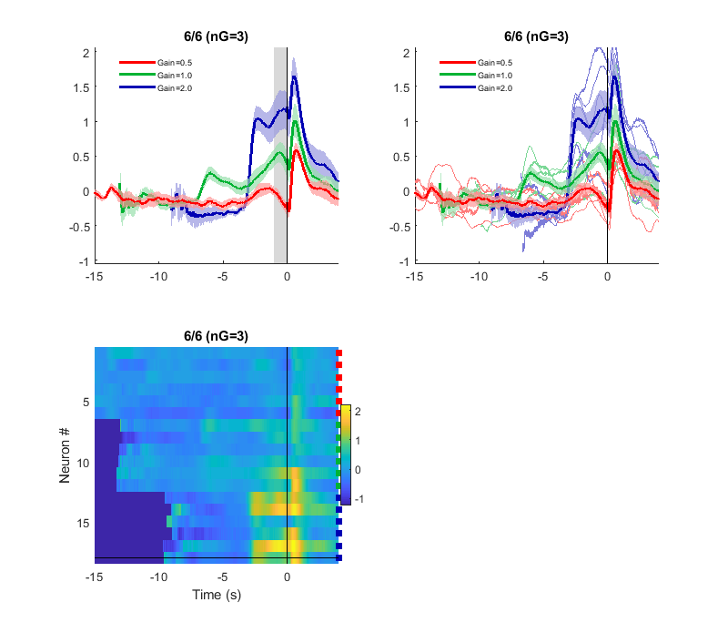
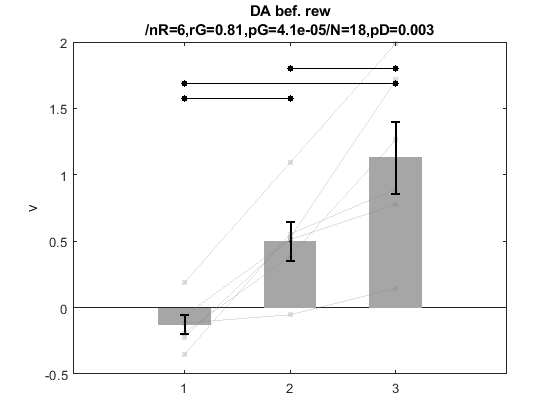
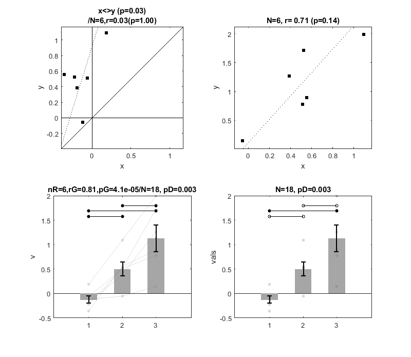
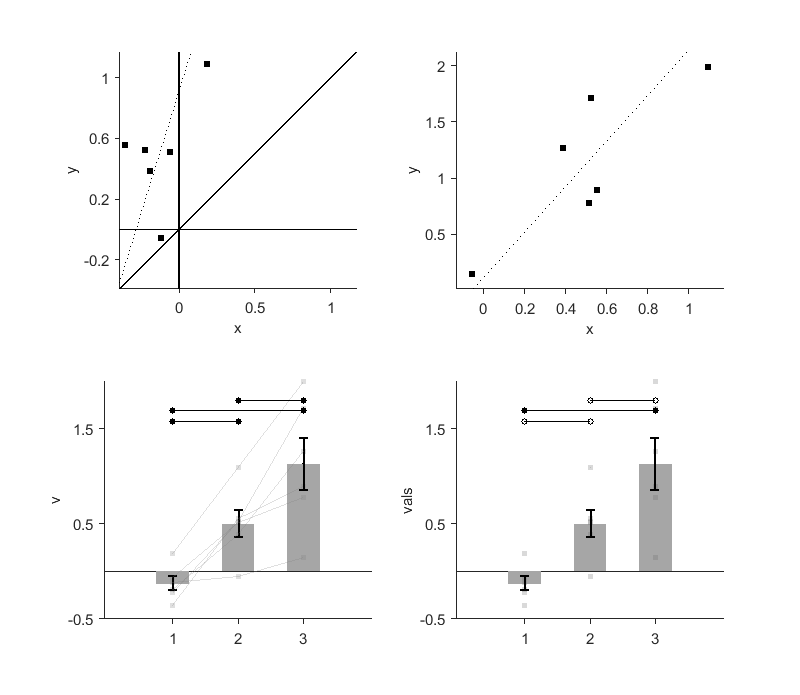

Contents
% a demo of Matlab plotting functions for classic neural data analysis % 2019 HyungGoo Kim % % PLOT_TIMECOURSE is a handy and powerful raster + PSTH plotting function. % it returns a structure with which we can save and combine multiple PSTHs. % Pleaes read help if you want to get the maximum out of it. % See also PLOT_TIMECOURSE, PANEL, REGRESS_PERP
Load an example session data
load('sample_session.mat', 'ms_time', 'lick','speed','DAsensor','expcond','event'); % ms_time: time points in microseconds for continuous data. % lick: timestamp for individual licks % speed: continuous locomotion speed resampled at 1000Hz % DAsensor: continuous dopamine sensor signals resampled at 1000Hz % plot a raw session data create_figure('Raw data', 0); % create figure of a letter size with a title plot(ms_time, [speed' DAsensor']); yl = ylim; hold on; plot(lick, yl(2) * 0.9 * ones(size(lick)), 'r.'); legend('Speed','DASensor', 'lick'); hold off; title('Session data example');
Plot timecourses (PSTHs)
to be accurate, it's not peri-stimulus time histogram but moving average. but let's call it PSTH for now. create figure. This returns a figure with 3 X 3 axis. use setpanel() for more packed panels
setfig(3,3); % Plot raster and averaged timecourse (PSTH) aligned by an event of interest gna; % get the next axis. % plot_timecourse split the current axis and draw raster plot (top) % and PSTH (bottom) plot_timecourse('timestamp', lick, event.REWARD_CD, -5000, 4000); gna; % Plot raster and PSTH, use time windows as vector variables plot_timecourse('timestamp', lick, event.REWARD_CD, event.TRIAL_START_CD, event.TRIAL_END_CD); gna; % Plot stream and averaged timecourse plot_timecourse('stream', speed, event.REWARD_CD, -5000, 4000); gna; % Plot sorted by experimental condition. % 6th parameter is a group variable (vector, size should be same as trigger) plot_timecourse('stream', DAsensor, event.VSTIM_ON_CD, -2000, event.REWARD_CD+3000, expcond); gna; % Plot timecourse, sorted by condition, with other other experimental event % (e.g., visual stimulus onset). event should be [nT X nEvent] array and % event_header should be same as nEvent. It draws vertical lines at the % median of event timings. % you can use a different color map global gP, gP.cmap = @copper; % 3rd return argument (psth) contains PSTH information (e.g., x, y, yerr) [~,~,psth] = plot_timecourse('stream', speed, event.REWARD_CD, event.TRIAL_START_CD, event.TRIAL_END_CD, ... expcond, 'event', event.VSTIM_ON_CD, 'event_header', {'VStimOn'} ); gP.cmap = []; gna; % Plot sorted by behavior (e.g, whether avg speed is lower than the median of the average) % get average speed for each trial avg_speed_tr = stream2rate(speed, event.TRIAL_START_CD, event.TRIAL_END_CD); % obtain median speed across trials median_speed = median(avg_speed_tr); grp = avg_speed_tr < median_speed; % use behavior quantification as a group variable plot_timecourse('stream', speed, event.REWARD_CD, event.TRIAL_START_CD, event.TRIAL_END_CD, grp); % Save timecourse results in a file. If the file exists, it appends to it. % So you can save multiple PSTHs in one file with different unitnames (the 3rd argument) % to save disk space, it drops trial data, which can be changed by argument. asave_psth('sample_psth.mat', psth, 'm0s1r1'); % Load PSTHs from a saved file. I recommend to use a return value as a % structure because it makes it easy to handle population data (see below) d = load('sample_psth.mat'); gna; % plot a loaded PSTH split_axes(gca, 1, 2); plot_psma(d.m0s1r1); % let's take a look at the fields of psth structure d.m0s1r1
ans =
struct with fields:
x: [1×2703 double]
mean: [3×2703 double]
sem: [3×2703 double]
std: [3×2703 double]
numel: [3×2703 double]
n_grp: [3×1 double]
pDiff: [1×2703 double]
gname: [3×1 double]
ginfo: []
pBaseDiff: [3×2703 double]
idx_sorted_by_num: [3×1 double]
p2: [NaN NaN NaN]
gnumel: [3×1 double]
rate_rsp: []
grp: [119×1 double]
resample_bin: 10
roc_val: []
event: [3×1 table]
name: 'm0s1r1'
array_rsp: []
 Plot lick, locomotion speed, neural data aligned by reward onset
this function subdivide a given panel, call plot_timecourse function iteratively to plot results aligned by the same trigger. an argument whose size is the same as ms_time is considered as stream. Otherwise it is considered as timestamp data. use need panel.m file for setpanel() function
p = setpanel(1,2); p1 = p.gnp; [pp h_psths psths] = plot_mtimecourses(ms_time, event.REWARD_CD, event.TRIAL_START_CD, event.TRIAL_END_CD, expcond, ... lick, speed, DAsensor, 'n_row', 3, 'pp', p1, 'labels', {'Lick','Speed','DA'});
Plot population PSTHs in in separate panels
load example PSTHs. multiple psth structures were saved in one file.
d = load('sample_pop_psth.mat');
plot_mpsth_xneuron(d);
 plot PSTHs together in one panel
setfig(2,2); ax = gna; % Plotting population timecouses (PSTHs). % shading is the stdandard error of the mean PSTHs. plot_mpsths(d, 'event_header', 'RewOn'); gna; % see individual PSTHs plot_mpsths(d, 'individual_psths', 1, 'event_header', 'RewOn'); gna; % see as an color-coded image plot_mpsths(d, 'individual_psths', 1, 'event_header', 'RewOn', 'plot_type','image'); % show a time window for quantification shade_plot(ax, [-1 0]);
Use number of groups = 3 for PSTHs plot_mpsths: no excluded paths (n=6) Use number of groups = 3 for PSTHs plot_mpsths: no excluded paths (n=6) Use number of groups = 3 for PSTHs plot_mpsths: no excluded paths (n=6)
Quantify results
quantify using the time window
DA_bef_rew = mpsths2rate(d, 0, [-1 0]); % plot population results figure; plot_barpair(DA_bef_rew); atitle('DA bef. rew'); % If things work well, write more sophiscated quantifying routine % in the single-session analysis routine and save there % below is an example of saving population quantifications into a text file cF = fieldnames(d); SaveResults('sample_data_summary2.dat', cF, {'CELL', 'V1','V2','V3'}, DA_bef_rew);
psthstruct: use most frequent group #: 3
Perform population analysis
at this stage, most important thing is check redundancy and uniqueness of data (neuron, behavior, whatever should not be redundant)
% Load a big table array of [# of neuron X # of quantifications] tb = readtable('sample_data_summary2.dat') setfig(2,2); % Scatter plots on square axes for two-variable pairwise comparisons gna; plotsqscatter(tb.V1, tb.V2); % Scatter plots on free-shaped axes for two-variable pairwise comparisons gna; plot_scatter(tb.V2, tb.V3); % Bar plots for N-variable pairwise comparisons gna; plot_barpair([tb.V1 tb.V2 tb.V3]); % Bar plots for N-variable unpaired comparisons % serialize array data into value and group [vals grp] = cols2grp([tb.V1 tb.V2 tb.V3], [1 2 3]); gna; plot_bargrp(vals, grp);
tb =
6×4 table
CELL V1 V2 V3
_______________ _________ _________ _______
'm110s9r2e0u1' -0.19295 0.38646 1.2634
'm124s11r1e0u1' -0.22588 0.52092 1.7156
'm127s12r1e0u1' -0.11641 -0.053713 0.14456
'm128s12r1e0u1' -0.063257 0.5111 0.77784
'm133s8r1e0u1' 0.18596 1.0903 1.9911
'm134s16r1e0u1' -0.35528 0.55357 0.89154
 format and save it to pdf
foramt figure to use it for presentation or paper
formatfig % save it to pdf. it requres APPEND_PDFS and ghostscript installation % fig2pdf('all');